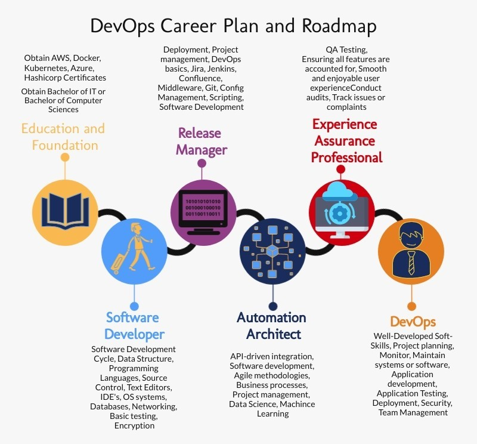

Sharif Ayazi – S3815095
I have chosen ICT Support Technician as of my careers plans and my opinion remain the same as my previous assignment. I want to get more skills and knowledge to achieve my goal. I still need some more skills, knowledge and reaches to become an ICT Support technician.As an ICT Support technician to start my careers with enough knowledge I still required to learn the below listing points.
- Repairing and relacing peripheral equipment such as terminals, printers and modems.
- Designing and maintaining websites and software.
- Implementing computer networks.
- Ensuring efficient use of applications and equipment.
- Adapting existing programs to meet user`s requirements.
- Determining software and hardware requirements to provide solutions to problems.
Cristopher Ariel Castro Inostroza – S3923904
I have chosen Cloud Computing Architect. So far is the right path for me unless, IOT (Internet of Things) gets more interesting for me soon. To make sure I understand what is behind the scenes in Cloud Architect computing. I need to understand and get familiarised with the fallowing technologies:
Java, Python or C#
Most architects have a software development background. An efficient AWS (Amazon Web Services) architect should be able to write code in Java, Python, C#
Networking
It is hard to create a secure, scalable cloud-based solution without understanding networking. DNS, TCP/IP, HTTP, CDN and VPN are only a few of the terms you want to make yourself familiar with.
Data storage fundamentals
Every software architect needs to know and understand how and when to use databases. In AWS, where you have many data storage options available, you need to be able to know when to use each.
Security foundations
From securing access to your AWS account to securing access to your data, AWS has several services and guidelines created specifically to help you make sure only authorized code and people are allowed to perform specific tasks.
Cloud-specific patterns and technologies
Once you move code into the cloud some rules change. Scalability, availability, and recovery become easy—if you design your workloads and harness AWS infrastructure correctly.
Communication
Designing great architecture does not mean a thing if you fail to explain your vision to software developers, managers, and fellow architects. You will need to learn to explain your ideas via emails, documents and presentations in a way that convinces your team why your solution is the best.
Rock AWS Cloud architecture
The skills essential to this role may sound like a lot, but they amount to a role that is more crucial to organizations than ever. Whether you start by learning about a few AWS services, preparing for the AWS solution architect certification test, or choosing a specific focus area (i.e., security, big data, docker or serverless), there’s value in taking inventory of the collection of your skills and taking advantage of learning opportunities designed to get you to the next level.
Steven Pigatto – S3851506
The career plan I have chosen, Cybersecurity, is still the path I want to take down. Currently, I do not have the required skills to take on this career, not just yet. Researching the required skills to obtain a career in cybersecurity has given me a great in site of the industry and levels of experience required.
The skills required to gain the basic knowledge to start a career, I would require learning the following:
- Knowledge of networking.
- Systems such as Windows and Linux.
- Cloud Security.
- Risk Management.
- Cryptography.
- Ethical hacking and Penetration.
- Programming and Scripting.
The path to gain these skills would be complete a relevant course that will cover these subjects. Completing a Diploma, a graduate or a Bootcamps which would cover everything and gain the hands-on skills to have an advantage of landing an entry level job. Doing research on subjects to gain ethical knowledge of cybersecurity issues to learn what the environment is like and current issues in the world.
Nicole Attard - S3924819
The area that I am aiming to enter into within the IT industry is in software quality assurance, with my ideal job being a software quality assurance engineer/analyst. According to Indeed.com, an experienced quality assurance engineer in Australia attracts a base income of approximately $102,000 a year (based on 117 salaries) and there are, as of November 2021, approximately 700 jobs listed for this role, or similar (Indeed, 2021).
Quality assurance (QA) is an essential part of the software development life cycle and throughout the years has shifted in its focus to not only ensuring that the product being developed performs as expected, but also that the product conforms with customer expectations (Maxim, Kessentini 2016).
For a software quality assurance engineer the most common skills appear to be:
- Bachelor's degree in software engineering, computer science, information technology or related
- Previous experience of at least 2 years working in the relevant field of QA
- Experience in API testing and automation
- Experience in Confluence/JIRA
- Knowledge of the Agile software development cycle
- Knowledge of various programming languages such as Python, C, C++, Java
- Time management skills
- Organisational skills
- Ability to work in a team
The tasks a software quality assurance engineer performs can include:
- Develop standards and ensure product conforms with intended purpose and customer expectations
- Design systems and testing methods to check for issues
- Create test plans
- Find errors and bugs in the software
- Analyse and fix errors and bugs
To get a start in this career, I believe completing a Bachelor of IT would be a good starting point. Even though many companies appear to focus more on the experience in the industry an individual has rather than a formal qualification, considering I currently have no experience in the IT industry, I believe a bachelor's degree would provide a solid foundation upon which to build on. The flexibility of completing an RMIT bachelor's degree through Open Universities Australia will hopefully mean that I would be able to supplement the bachelor's degree with more focused studies from other sources such as short courses from Skill Finder, Udemy, edX, et cetera.
Given that I have basically no experience in the IT industry, hopefully having begun a bachelor's degree, I would be lucky enough to find any type of general junior position in the IT industry in order to gain some firsthand, practical experience, and also to have the opportunity to further my skills. While gaining this experience and completing the bachelor's and further studies, I aim to transition to a position more specific in terms of the quality assurance field, such as a junior software tester in a QA team. As I gain more experience and further my skills, I hopefully will be able to work more independently and progress further to more senior testing/quality assurance positions.
My future career plan:
Begin Bachelor of IT à find a junior position in the IT industry à work through Bachelor of IT course à supplement learning with further short online courses à find a position as a tester à upgrade skills and gain further experience à transition to a more senior position in the software quality assurance field.
Michael Sy – S3921688
My career plan of being a cyber security analyst requires skills that I don’t have yet. With continuous studies and research, I will be able to reach that goal of becoming a certified cybersecurity analyst.
Some of the key component of being a successful analyst that I need to acquire includes:
- Scripting – knowledge and skills of computer language like java script, c++, and python. A programming language that can perform a variety of cybersecurity functions like malware analysis, penetration testing and scanning.
- Networking – to be able to protects your network and data from breaches, intrusions and other threats. Network Security involves access control, virus and antivirus software, application security, network analytics, types of network-related security (endpoint, web, wireless), firewalls, VPN encryption and more.
- Hacking – Cybersecurity analyst needs to think like a hacker to understand the hacking process. Although the job is not to hack the system but to protect it by taking all preventive and protective measures.
- Operating System - are at the bedrock of any system's computer security, which is essentially the maintenance of system integrity, availability, and confidentiality.One example of OS is Kali Linux a Security Distribution of Linux specifically designed for digital forensics and penetration testing. It is one of the best hacking OS which has over 600 preinstalled penetration-testing applications (cyber-attack performs against computer vulnerability). This OS can be run on Windows as well as Mac OS.
Career Pathway
Cyber Security Analyst
Education and Skills Foundation
- Study for Master of Cyber Security which includes courses like Introduction to Information Security, Structure of Cyberspace, Programming Fundamentals, Cryptology to Cyber security.
- Building Soft Skills such as Communication and collaboration, Analytical mindset, Keen understanding of human behaviors, Research and writing experience, curiosity and creativity.
- Developing Technical Skills such as Reverse Engineering, Application design, Firewall administration.
- Invest on Certifications such as CEH (certified Ethical Hacker), CISM (Certified Information Security Manager), CompTIA Security+
Apply for Entry Level / On-The-Job Training to gain experience in this industry such as
- Incident Responder
- Cryptographer
- Security Auditor
- Forensic expert
Build a career as a Cyber Security Analyst as I gained experience and develop a more thorough understanding of cyber security principles and skills, I will try to pursue a more advanced role in the industry such as
- Cyber Security Manager/Administration
- Cyber Security Engineer / Architect
Theodore Haluska - S3925389
My intended career plan is in DevOps. DevOps although in comparison to other IT positions may not look like it is in high demand, it is becoming an invaluable position to many companies when it comes to the design and development side of the field as it bridges this gap ensuring they work together for the common goal. DevOps covers areas from development and design processes to production, releases, support, and future additions.
To succeed in this plan, I must attain the following skills and knowledge:
- Web development (JavaScript, HTML, CSS, XML, Etc.)
- Linux Environment
- Scripting languages (Python, Pearl, Ruby, PHP, Bash, Etc)
- Sound communication skills
- Understanding of CI/CD processes (Continuous Integration / Continuous Deployment)
- DevOps Tools (Puppet, Travis CI, Bamboo, Docker, Sensu, Splunk, Ansible, etc)
- Understanding IAS (infrastructure as code)
- Automated build/test
- Containerization
- Version control/Source code management
- Networking
Career Path

First and foremost, I need to attain the following and I believe the roadmap I have set out for myself is not only correct but how I personally feel I would best transition into each new position to get to my goal of DevOps.
Education and Foundation
- Bachelor of Information Technology or Bachelor of Computer Sciences
-
- Certificates in:
- AWS
- Docker
- Kubernetes
- Azure
- Hashicorp
These would point me in the direction that I see myself going but are not limited to these certificates alone.
Software Developer
Starting as a Software Developer would give me the opportunity to further develop my skills and understanding of the software development design and processes.Software Developers skills/responsibilities are as follows:
- Software Development Cycle
- Database Knowledge
- Data Structures and Algorithms
- Programming Languages (Python, Ruby, Java, C++, HTML, CSS, JavaScript)
- Source Control
- Testing Procedures (System Testing, Integration Testing, Unit Testing)
- Debugging Knowledge
- Operating Systems
- Cryptography
- Software Frameworks
- Cloud Platforms
- Basic Networking
Release Manager
Release Manager plans, schedules, coordinating between teams, deployment of releases, responsible for the release lifecycle, testing, and risk management.
- Deployment
- Project Management
- DevOps Basics
- Team collaboration software (Jira, Jenkins, Confluence)
- Middleware
- Git
- Config Management
- Scripting
- Software development
- Scrum
Automation Architect
- Api-driven Integration
- Software development
- Agile Methodologies
- Business Processes
- Project Management
- Data Science
- Machine Learning
- Designing Automation Framework
Experience Assurance Professional
- QA testing
- Smooth enjoyable user experience
- Track issues and complaints
DevOps
- Well-developed soft skills
- Project planning
- Monitor, maintain systems or software
- Application development
- Application testing
- Deployment
- Security
- Team management
This will not only be a challenge for myself, but it will also enable me to explore multiple career options should I decide to change.
TEAM CAREER PLANS
After reflecting on the last assessment in terms of the ideal jobs that each team member would like to have one day in the future, it appears that the ideal jobs have remained consistent. Having provided an outline of the skills each job would require in conjunction with a career plan to ultimately achieve our desired positions, not only are the skills required for each job similar, but the career paths also appear to be consistent with one another.
The general career path common for all team members despite these positions being in different sectors of the IT industry appears to be:
- Obtain necessary fundamental educational foundation in information technology through a variety of different sources, such as university degrees, bootcamps, certificates, diplomas,
- Gain experience in the IT industry
- Gain appropriate and/or required certifications
- Develop further skills through experience and obtain further qualifications
- Continue progressing up the ladder through a variety of different positions to ultimately achieve ideal goal.
The most common element across these career plans appears to be the requirement for formal education in the IT industry as well as extensive experience. Also, as clearly seen in the career plans, a number of skills and required knowledge are common despite the different IT fields. For instance, the DevOps and QA career plans both require knowledge of testing procedures, the software development lifecycle and programming languages, while cloud computing architects and cybersecurity analysts require knowledge of cloud architecture and networking processes, among others. ICT support technicians would require a great amount of knowledge over a number of different IT fields in order to perform their job functions and may not necessarily have specialised knowledge in one particular field, unless their focus is on a specific area.